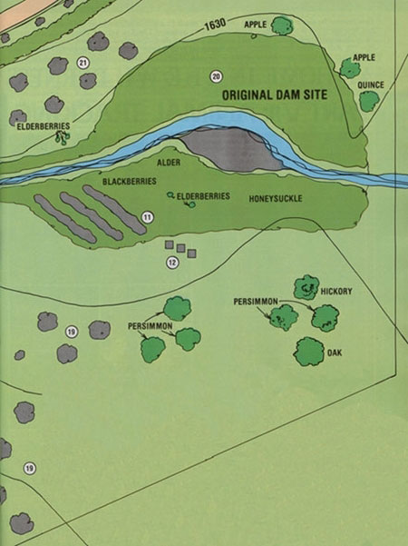

[11] Elderberry/blackberry patch, bush-hogged in autumn, strip-mulched with old carpet and sawdust to create rows within existing thicket, elderberries transplanted from other patches
[12] Beehives.
[19] Mixed tree crops (black walnut, American persimmon, and paulownia) spaced for easy haymaking between rows.
[20] Old pond area (kept relatively wild): bee forage (alder, willow, mountain mint, garen hyssop, Vitex negundo ) encouraged, small aquaculture pond established.
[21] Pastureland: goat and chicken forage crops plus drop forage from honey locust, American persimmon, and sawtooth oak (trees require fencing for protection from goats).
|
 |
|
|